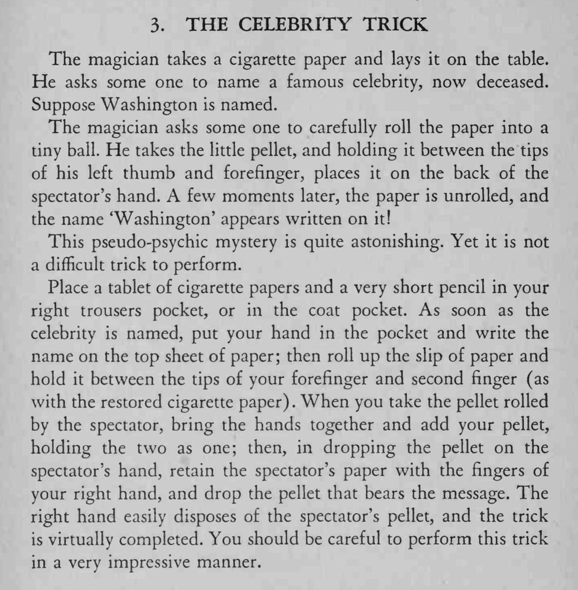

观众说出一位已故名人的名字，把卷烟纸揉成团放在他手背上，展开后纸上竟写着那个名字。
写名字的动作要藏在伸手进口袋的瞬间，神态要郑重。

The magician takes a cigarette paper and lays it on the table. He asks some one to name a famous celebrity, now deceased. Suppose Washington is named. The magician asks some one to carefully roll the paper into a tiny ball. He takes the little pellet, and holding it between the tips of his left thumb and forefinger, places it on the back of the spectator's hand. A few moments later, the paper is unrolled, and the name 'Washington' appears written on it! This pseudo-psychic mystery is quite astonishing. Yet it is not a difficult trick to perform. Place a tablet of cigarette papers and a very short pencil in your right trousers pocket, or in the coat pocket. As soon as the celebrity is named, put your hand in the pocket and write the name on the top sheet of paper; then roll up the slip of paper and hold it between the tips of your forefinger and second finger (as with the restored cigarette paper). When you take the pellet rolled by the spectator, bring the hands together and add your pellet, holding the two as one; then, in dropping the pellet on the spectator's hand, retain the spectator's paper with the fingers of your right hand, and drop the pellet that bears the message. The right hand easily disposes of the spectator's pellet, and the trick is virtually completed. You should be careful to perform this trick in a very impressive manner.